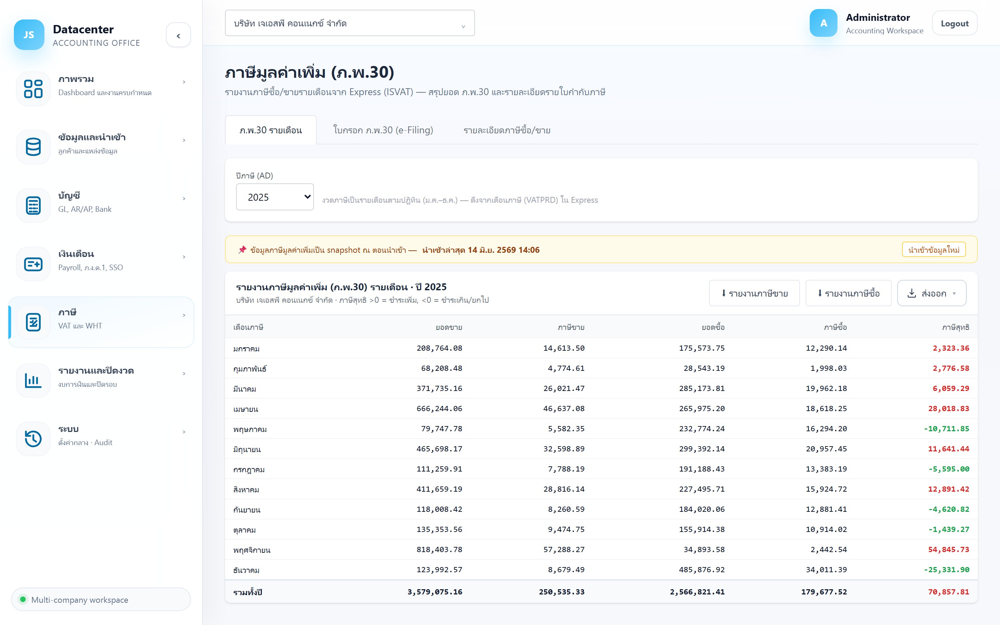
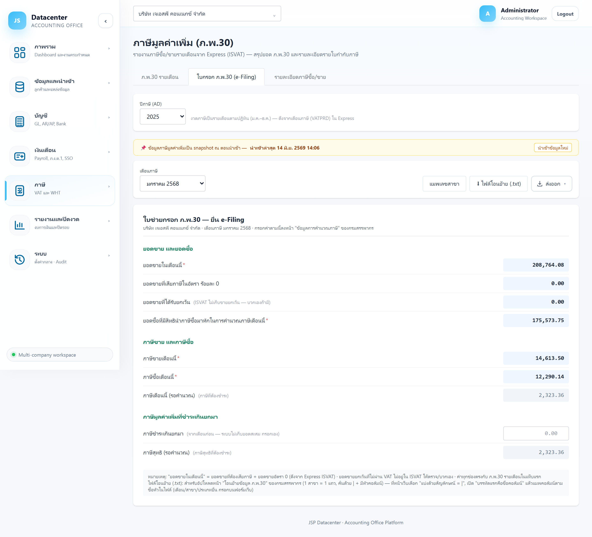
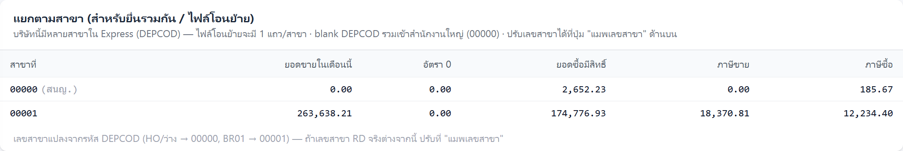
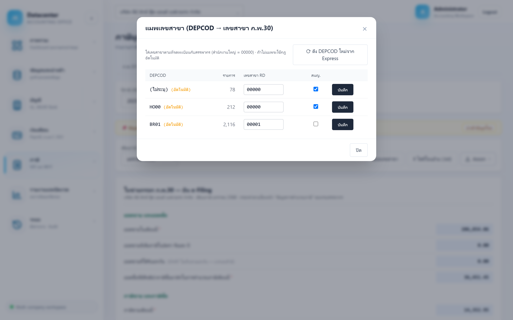
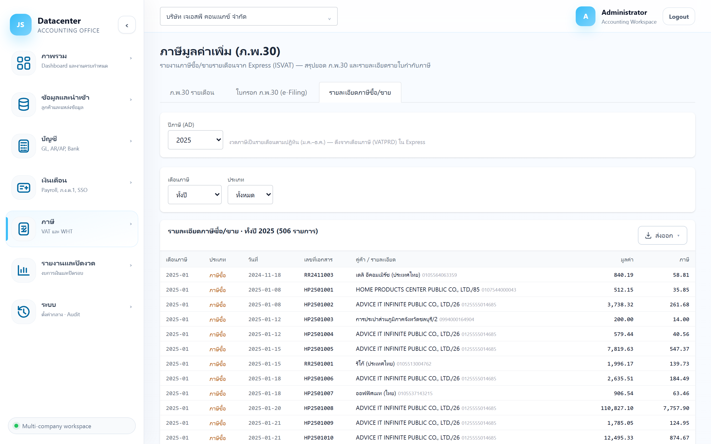

ภาษีมูลค่าเพิ่ม (ภ.พ.30)
สรุปภาษีซื้อ–ภาษีขายรายเดือนจาก Express พร้อม ใบช่วยกรอก ภ.พ.30 ที่เรียงช่องตรงกับหน้า e-Filing ของกรมสรรพากร และ ไฟล์โอนย้าย (.txt) สำหรับอัปโหลดแทนการพิมพ์มือ
ทั้งหน้าเป็น รายงานอ่านอย่างเดียว — ไม่ได้ยื่นแบบให้ แต่เตรียมตัวเลขทุกช่องให้พร้อมกรอก/อัปโหลด ที่เว็บกรมสรรพากร ข้อมูลมาจากไฟล์ภาษีของ Express (ISVAT) ที่ดึงเข้าตอน นำเข้าข้อมูล
1. การเข้าใช้งาน
- เลือกบริษัทลูกค้า ที่แถบด้านบน
- เปิดเมนู ภาษี → ภาษีมูลค่าเพิ่ม
- เลือก ปีภาษี แล้วเลือกแท็บที่ต้องการใช้งาน
ช่องปีภาษี
| กรณี | สิ่งที่เห็น |
|---|---|
| บริษัทมีข้อมูลภาษีแล้ว | เป็นรายการให้เลือก แสดงเฉพาะ ปีที่มีข้อมูลจริง — ถ้าปีปัจจุบันยังไม่มีข้อมูล ระบบจะเลือกปีล่าสุดที่มีให้อัตโนมัติ |
| ยังไม่มีข้อมูลเลย | เป็นช่องพิมพ์ตัวเลข ให้กรอกปีเอง |
ช่อง “ปีภาษี (AD)” ใช้ ค.ศ. เช่น 2025 ส่วนแท็บใบกรอกจะแสดงงวดเป็น พ.ศ.
(“มกราคม 2568”) ให้ตรงกับแบบของกรมสรรพากร — เป็นปีเดียวกัน แค่คนละรูปแบบ
งวด ภ.พ.30 เป็นรายเดือน ม.ค.–ธ.ค. เสมอ ไม่ผูกกับรอบปีบัญชีของบริษัท (ดึงจากเดือนภาษี VATPRD ใน Express) บริษัทที่รอบบัญชีไม่ตรงปีปฏิทินก็ใช้หน้านี้ได้ตามปกติ
แถบเตือน “ข้อมูลเป็น snapshot”
แถบสีเหลืองบอกว่า นำเข้าล่าสุดเมื่อไร — ตัวเลขบนหน้าจอคือภาพนิ่ง ณ ตอนนำเข้า ไม่ใช่ข้อมูลสดจาก Express ถ้ามีการแก้ใบกำกับใน Express หลังจากนั้น ต้องกด “นำเข้าข้อมูลใหม่” ก่อน ไม่งั้นยอดที่ยื่นจะไม่ตรง
2. แท็บ “ภ.พ.30 รายเดือน”
ภาพรวมทั้งปี 12 เดือน ใช้ตรวจว่าเดือนไหนต้องชำระเพิ่ม เดือนไหนชำระเกิน และยอดรวมทั้งปีเป็นเท่าไร

| คอลัมน์ | ความหมาย |
|---|---|
| เดือนภาษี | งวดภาษีรายเดือน — เดือนที่ไม่มีรายการจะเป็นสีเทาจาง |
| ยอดขาย | มูลค่าขายที่ต้องเสียภาษี (ฐานภาษีขาย) |
| ภาษีขาย | ภาษีมูลค่าเพิ่มจากการขายในเดือนนั้น |
| ยอดซื้อ | มูลค่าซื้อที่มีสิทธินำภาษีซื้อมาหัก |
| ภาษีซื้อ | ภาษีมูลค่าเพิ่มจากการซื้อในเดือนนั้น |
| ภาษีสุทธิ | ภาษีขาย − ภาษีซื้อ (ดูการอ่านสีด้านล่าง) |
สีแดง (มากกว่า 0) = ต้องชำระเพิ่ม · สีเขียว (ติดลบ) = ชำระเกิน ยกไปหักเดือนถัดไปได้
ปุ่มดาวน์โหลดในแท็บนี้
| ปุ่ม | ได้อะไร |
|---|---|
| ⬇ รายงานภาษีขาย | ไฟล์ Excel รายงานภาษีขายทั้งปี (ชื่อไฟล์ vat-sales-{ปี พ.ศ.}.xlsx) — แสดงเมื่อมีรายการภาษีขาย |
| ⬇ รายงานภาษีซื้อ | ไฟล์ Excel รายงานภาษีซื้อทั้งปี (vat-purchase-{ปี พ.ศ.}.xlsx) — แสดงเมื่อมีรายการภาษีซื้อ |
| ส่งออก | ส่งออก ตารางสรุป 12 เดือน ที่เห็นบนหน้าจอ เป็น Excel / CSV / PDF |
“รายงานภาษีขาย/ซื้อ” = รายงานภาษีตามรูปแบบที่ต้องเก็บไว้ให้สรรพากรตรวจ (รายใบกำกับ) · “ส่งออก” = ตารางสรุปรายเดือนที่เห็นบนหน้าจอ
3. แท็บ “ใบกรอก ภ.พ.30 (e-Filing)”
แท็บหลักที่ใช้ตอนยื่นจริง — เรียงช่องตรงตามหน้า “ข้อมูลการคำนวณภาษี” ของเว็บกรมสรรพากร เปิดคู่กันสองจอแล้วพิมพ์ตามทีละช่องได้เลย

เลือกงวดเดือน
ช่อง เดือนภาษี แสดงเป็น พ.ศ. เช่น “มกราคม 2568” — เดือนที่ไม่มีข้อมูลจะเลือกไม่ได้และต่อท้ายว่า
(ไม่มีข้อมูล) ระบบเลือกเดือนแรกที่มีข้อมูลให้อัตโนมัติ
ความหมายของสีช่อง
| ลักษณะช่อง | หมายความว่า |
|---|---|
| พื้นฟ้า ตัวหนา + มี * | ค่าที่ดึงจาก Express ให้แล้ว — ช่องบังคับกรอกในแบบ ภ.พ.30 |
| พื้นเทา ตัวจาง | ค่าที่ระบบคำนวณให้ดูเทียบ — เว็บสรรพากรจะคำนวณเองอยู่แล้ว ไม่ต้องพิมพ์ |
| ช่องขาว พิมพ์ได้ | ค่าที่ระบบไม่รู้ ต้องกรอกเอง (มีช่องเดียว ดูด้านล่าง) |
ช่องทั้งหมดในใบกรอก
| ช่อง | ที่มาของตัวเลข |
|---|---|
| ยอดขายในเดือนนี้ | ยอดขายที่ต้องเสียภาษี + ยอดขายอัตราร้อยละ 0 (จาก Express) |
| ยอดขายที่เสียภาษีในอัตรา ร้อยละ 0 | ยอดขายส่งออก/อัตรา 0 จาก Express |
| ยอดขายที่ได้รับยกเว้น | เป็น 0.00 เสมอ — Express (ISVAT) ไม่เก็บยอดขายยกเว้นไว้ ต้องตรวจและบวกเองถ้ากิจการมี |
| ยอดซื้อที่มีสิทธินำภาษีซื้อมาหัก | ฐานภาษีซื้อของเดือนนั้น |
| ภาษีขายเดือนนี้ | ภาษีขายรวมของเดือนนั้น |
| ภาษีซื้อเดือนนี้ | ภาษีซื้อรวมของเดือนนั้น |
| ภาษีเดือนนี้ (รอคำนวณ) | ระบบคำนวณ = ภาษีขาย − ภาษีซื้อ · บวก = ต้องชำระ, ลบ = ชำระเกิน |
| ภาษีชำระเกินยกมา | ต้องกรอกเอง — ยอดชำระเกินจากเดือนก่อน ระบบไม่เก็บยอดสะสมให้ |
| ภาษีสุทธิ (รอคำนวณ) | ระบบคำนวณ = ภาษีเดือนนี้ − ภาษีชำระเกินยกมา |
- ยอดขายที่ได้รับยกเว้น ขึ้น 0.00 เสมอ ถ้ากิจการมีรายได้ยกเว้น VAT ต้องหายอดเองแล้วกรอกที่เว็บสรรพากร
- ภาษีชำระเกินยกมา ที่พิมพ์ไว้จะ ถูกล้างทันทีเมื่อเปลี่ยนเดือน ปี หรือบริษัท — ให้พิมพ์ตอนที่จะใช้ค่าเลย และอย่าถือว่าระบบจำไว้ให้
ปุ่มในแท็บนี้
| ปุ่ม | หน้าที่ |
|---|---|
| แมพเลขสาขา | ตั้งเลขสาขาที่ใช้ในไฟล์โอนย้าย (ดูข้อ 4) |
| ⬇ ไฟล์โอนย้าย (.txt) | ดาวน์โหลดไฟล์สำหรับอัปโหลดที่เว็บสรรพากร (ดูด้านล่าง) |
| ส่งออก | ส่งออกใบกรอกงวดนั้นเป็น Excel / CSV / PDF ไว้เก็บเป็นหลักฐานการยื่น |
ไฟล์โอนย้ายข้อมูล (.txt)
แทนการพิมพ์ทีละช่อง สามารถอัปโหลดไฟล์เข้าเว็บกรมสรรพากรได้เลย
- เลือกเดือนภาษีให้ถูกต้อง แล้วกด ⬇ ไฟล์โอนย้าย (.txt) — ได้ไฟล์ชื่อ
pp30-transfer-{ปี พ.ศ.}-{เดือน}.txt - ที่เว็บสรรพากร เปิดหน้า “โอนย้ายข้อมูล ภ.พ.30” แล้วเลือกไฟล์นี้
- ตั้งค่า “แบ่งด้วยสัญลักษณ์ = |” (ขีดตั้ง)
- เปิดตัวเลือก “บรรทัดแรกคือชื่อคอลัมน์”
- แมพคอลัมน์ ตามชื่อหัวคอลัมน์ที่มีอยู่ในไฟล์
- เดือน / สาขา / ประเภทการยื่น ยังต้องเลือกบนฟอร์มของเว็บเองตามปกติ
1 สาขา = 1 บรรทัด · คั่นด้วย | · มีบรรทัดหัวคอลัมน์ · บริษัทสาขาเดียวจะได้ไฟล์ 1 บรรทัด
4. บริษัทที่มีหลายสาขา
ถ้าบริษัทมีรหัสแผนก/สาขา (DEPCOD) มากกว่า 1 ค่าใน Express ระบบจะแสดงตารางแยกสาขาเพิ่มใต้ใบกรอก และไฟล์โอนย้ายจะมี 1 บรรทัดต่อสาขา

ตารางแยกสาขาจะแสดงเมื่องวดเดือนนั้นมีข้อมูลจาก มากกว่า 1 สาขา — เดือนที่มีเฉพาะสาขาเดียวจะไม่เห็นตารางนี้ ถือว่าปกติ
การแปลงรหัสสาขาอัตโนมัติ
| DEPCOD ใน Express | เลขสาขาที่ระบบใช้ |
|---|---|
HO… หรือเว้นว่าง | 00000 (สำนักงานใหญ่) |
BR01 | 00001 |
กฎอัตโนมัติเป็นแค่การเดาจากรหัสแผนก — เลขสาขาที่จดทะเบียนจริงกับสรรพากรอาจไม่ตรง ให้เปิด “แมพเลขสาขา” ตรวจและแก้ก่อนอัปโหลดไฟล์
หน้าต่าง “แมพเลขสาขา”

| ส่วนที่แสดง | ความหมาย / วิธีใช้ |
|---|---|
| DEPCOD | รหัสแผนกจาก Express (ว่างจะขึ้นว่า “ไม่ระบุ”) — ป้าย (อัตโนมัติ) แปลว่ายังไม่ได้ตั้งเอง ใช้กฎเดาอยู่ |
| รายการ | จำนวนรายการภาษีที่อยู่ใต้รหัสนั้น ใช้ดูว่าสาขาไหนมีปริมาณเท่าไร |
| เลขสาขา RD | เลขสาขาที่จดทะเบียนกับสรรพากร — สำนักงานใหญ่ใช้ 00000 (พิมพ์ได้เฉพาะตัวเลข) |
| สนญ. | ติ๊กถ้ารหัสนั้นคือสำนักงานใหญ่ |
| บันทึก | บันทึกการแมพของแถวนั้น (บันทึกทีละแถว) |
| คืนค่า | ลบการแมพที่ตั้งเอง กลับไปใช้กฎอัตโนมัติ — แสดงเฉพาะแถวที่เคยตั้งไว้ |
| ⟳ ดึง DEPCOD ใหม่จาก Express | อ่านรหัสแผนกใหม่จาก Express ใช้เมื่อเพิ่งเปิดสาขาใหม่แล้วยังไม่เห็นในรายการ |
ตั้งครั้งเดียวใช้ได้ตลอด ไม่ต้องตั้งใหม่ทุกเดือน และเป็นค่าเฉพาะของบริษัทนั้น
5. แท็บ “รายละเอียดภาษีซื้อ/ขาย”
ดูรายใบกำกับภาษี ใช้ตอนหาที่มาของยอด หรือตรวจหาใบที่ผิดปกติ

| ตัวกรอง | ค่าที่เลือกได้ |
|---|---|
| เดือนภาษี | ทั้งปี (ค่าตั้งต้น) หรือเลือกเดือนใดเดือนหนึ่ง |
| ประเภท | ทั้งหมด / ภาษีขาย / ภาษีซื้อ |
| คอลัมน์ | ความหมาย |
|---|---|
| เดือนภาษี | งวดภาษีของรายการ (ปี-เดือน) |
| ประเภท | ภาษีขาย (สีฟ้า) หรือ ภาษีซื้อ (สีเหลือง) |
| วันที่ | วันที่ในเอกสาร |
| เลขที่เอกสาร | เลขที่ใบกำกับภาษี ใช้ตามกลับไปหาเอกสารจริง |
| คู่ค้า / รายละเอียด | ชื่อคู่ค้า พร้อมเลขผู้เสียภาษีตัวเล็กต่อท้าย |
| มูลค่า | ฐานภาษีของใบนั้น |
| ภาษี | ภาษีมูลค่าเพิ่มของใบนั้น |
รายการที่ต่อท้ายด้วย (ล่าช้า) คือใบกำกับที่นำมาใช้ข้ามงวด (เช่น วันที่เอกสารเป็นปีก่อน แต่ยื่นในงวดนี้) — ควรตรวจว่ายังใช้สิทธิได้จริงตามกฎหมาย
แถวสุดท้ายสรุป จำนวนรายการ พร้อม ยอดรวมมูลค่า และ ยอดรวมภาษี ตามเงื่อนไขที่กรองอยู่
6. ขั้นตอนยื่น ภ.พ.30 แบบครบวงจร
- นำเข้าข้อมูลจาก Express ให้ครอบคลุมเดือนที่จะยื่น (เมนูนำเข้าข้อมูล)
- เปิดแท็บ ภ.พ.30 รายเดือน ดูว่าเดือนนั้นมียอดและภาษีสุทธิเป็นเท่าไร
- ตรวจแถบวันที่นำเข้าล่าสุด ว่าใหม่พอ ครอบคลุมเอกสารทั้งเดือนแล้ว
- เปิดแท็บใบกรอก เลือกเดือน กรอก “ภาษีชำระเกินยกมา” (ถ้ามี) และตรวจยอดขายยกเว้น
- ยื่นที่เว็บสรรพากร — พิมพ์ตามใบกรอก หรือใช้ไฟล์โอนย้าย (.txt)
- เก็บหลักฐาน — ส่งออกใบกรอกเป็นไฟล์เก็บไว้คู่กับใบเสร็จการยื่น
- ปิดงานในระบบ — กลับไปที่ Dashboard แล้วกด “ทำเสร็จ” ที่งาน ภ.พ.30 ของเดือนนั้น
7. ปัญหาที่พบบ่อย
| อาการ | สาเหตุและวิธีแก้ |
|---|---|
| ขึ้น “ไม่มีข้อมูลภาษีมูลค่าเพิ่มสำหรับปี …” | ยังไม่ได้นำเข้าไฟล์ภาษี (ISVAT) ของปีนั้น — ไปที่เมนูนำเข้าข้อมูลแล้วนำเข้าปีนั้น |
| เดือนที่ต้องการเลือกไม่ได้ ขึ้น “(ไม่มีข้อมูล)” | เดือนนั้นไม่มีรายการภาษีในข้อมูลที่นำเข้า — ตรวจใน Express ว่าคีย์เอกสารครบหรือยัง แล้วนำเข้าใหม่ |
| ยอดไม่ตรงกับที่คำนวณเอง | ดูวันที่นำเข้าล่าสุดที่แถบสีเหลืองก่อน — ถ้าเก่ากว่าที่แก้ Express ให้นำเข้าใหม่ จากนั้นใช้แท็บรายละเอียดกรองเดือนนั้นเทียบรายใบ |
| ค่า “ภาษีชำระเกินยกมา” ที่กรอกไว้หายไป | ระบบล้างค่านี้ทุกครั้งที่เปลี่ยนเดือน/ปี/บริษัท (ตั้งใจให้ไม่เอาค่าเดือนก่อนมาปนกัน) — กรอกใหม่ตอนใช้งาน |
| ไฟล์โอนย้ายอัปโหลดแล้วคอลัมน์เพี้ยน | ที่เว็บสรรพากรยังไม่ได้ตั้ง “แบ่งด้วยสัญลักษณ์ = |” หรือไม่ได้เปิด “บรรทัดแรกคือชื่อคอลัมน์” |
| เลขสาขาในไฟล์ไม่ตรงกับที่จดทะเบียน | แก้ที่ปุ่ม “แมพเลขสาขา” แล้วดาวน์โหลดไฟล์ใหม่ |
| เปิดสาขาใหม่แล้วไม่เห็นในรายการแมพ | กด “⟳ ดึง DEPCOD ใหม่จาก Express” ในหน้าต่างแมพเลขสาขา |
งานภาษีที่เกี่ยวข้อง — หัก ณ ที่จ่าย (ภ.ง.ด.3/53) และ ภ.ง.ด.50 (คู่มือกำลังจัดทำ)